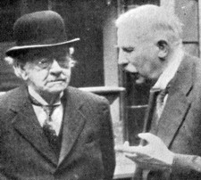

Dalton
Dalton foi um químico inglês nascido em 1776. Ele é bastante conhecido por ter desenvolvido a ideia do modelo atômico que recebe seu nome “O modelo atômico de Dalton". Sua teoria afirmava que a matéria era formada por pequenas esferas maciças e indivisíveis.
Embora hoje saibamos que ela estava errada, essa teoria foi um divisor de águas no estudo da química e foi de muito valor para os outros modelos que viriam a seguir.
- Todas as substâncias são formadas por átomos
- Os átomos de um mesmo elemento quimicos são iguais em todas as suas características (por exemplo ,tamanho e massa)
- Os atomos dos diferentes elementos químicos são diferentes entre si
- As substâncias simples são formadas por átomos de um mesmo elemento químico
- As substâncias compostas (também chamadas compostos químicos, ou simplesmente compostos) são formados por átomos de dois ou mais elementos quimicos diferentes, que se combinam sempre numa mesma proporcão
- Átomos não são criados nem destruidos, são esferas rígidas indivisíveis
- Nas reações químicas, os átomos se recombinam
Como podemos ver as suas proposições em relação às reações químicas ainda se mantêm bastante atuais e são suficientes para entendermos como e porque as mesmas se comportam de tal maneira.
Thomson
O modelo atômico de Thomson, criado por volta de 1898 pelo físico Joseph John Thomson, propunha o átomo como sendo uma esfera neutra e maciça, porém divisível, onde continha elétrons de carga negativa presos a uma esfera de carga positiva. Ele acreditava que a carga do átomo era nula, pois a carga positiva se anula com a negativa, por serem iguais. Seu modelo ficou conhecido como “pudim de passas” ou “pudim de ameixa”, e foi útil para a evolução da teoria atômica. Thomson ficou conhecido a partir daí como “pai do elétron” por ter descoberto essa partícula.
Rutherford
Um fato interessante
Segundo algumas fontes Rutherford foi aluno de Thomson. E é devido a esta influência que ele também passou a estudar os modelos atômicos.
Até 1911, o modelo atômico aceito pela comunidade científica era o de Thomson. Entretanto, nesse mesmo ano, o físico neozelandês, Ernest Rutherford, apresentava sua teoria, afirmando que Thompson estava errado. Para o físico, o átomo não era uma esfera maciça eletricamente positiva incrustada de elétrons. De acordo com Rutherford, o átomo teria, na verdade, um núcleo de carga elétrica positiva, de tamanho inferior, proporcionalmente, ao diâmetro total; contudo, a massa estaria, em quase toda totalidade, nesse núcleo atômico. Ele seria envolto por elétrons, eletricamente negativos.
Para chegar nessa conclusão, Rutherford desenvolveu um experimento baseado em radioatividade, que consistia, a princípio, em bombardear uma fina lâmina de ouro por uma fonte de um elemento radioativo - Polônio (Po) - que emite alta energia em forma de partículas alfa, beta e raios gama. Sua análise verificou que a maior parte das partículas atravessavam a lâmina de ouro sem desvios, porém, algumas delas eram desviadas da trajetória retilínea original, levando-no a uma indagação do porquê isso aconteceria. Rutherford concluiu, portanto, que o átomo apresentava muito espaço sem preenchimento e que, por isso, as partículas conseguiam passar entre ele, descobrindo, assim, a eletrosfera.
Embora de grande importância para o avanço da ciência, o modelo de Rutherford não estava isento de falhas: na teoria do eletromagnetismo, que explica que as partículas , quando submetidas a uma aceleração, emitem ondas eletromagnética, o modelo planetário entrava em contradição: emitindo energia, o elétron perderia energia potencial e cinética, “caindo”, portanto, no núcleo. Sabe-se que isso não acontece, de fato. Essa lacuna seria preenchida, posteriormente, por Niels Bohr, complementando com a existência de níveis de energéticos em um modelo denominado por Rutherford-Bohr.
Bohr
O modelo atômico de Bohr foi proposto em 1913, nele temos elétrons distribuídos por camadas ao redor do núcleo do átomo. Este modelo também é conhecido como átomo de Rutherford-Bohr, pois foi uma evolução do trabalho proposto pelo cientista Ernest Rutherford. A partir de seus experimentos Bohr descobriu que um gás emitia luz quando uma corrente elétrica passava nele. Isso acabou explicando que quando os elétrons, em seus átomos, absorvem energia eles liberam a mesma em forma de luz. Com esse fato Bohr deduziu que um átomo tem um conjunto de energia disponível para seus elétrons, este conjunto mais tarde foi chamado de níveis de energia. Outro conceito proposto pelo físico diz que os elétrons são distribuídos em camadas ao redor do núcleo. São 7 camadas representadas pelas letras K, L, M, N, O, P e Q. As camadas da eletrosfera representam os níveis de energia da eletrosfera assim, as camadas apresentadas anteriormente constituem os 1º, 2º, 3º, 4º, 5º, 6º e 7º níveis de energia, respectivamente. Mesmo o modelo atômico do físico dinamarquês ter sido publicado a mais de 100 anos atrás, ele é usado até os dias atuais.

Videozinho Bacana
Abaixo vai um video muito legal sobre a história dos modelos atômicos
até chegar onde chegamos. (Ative as legendas)